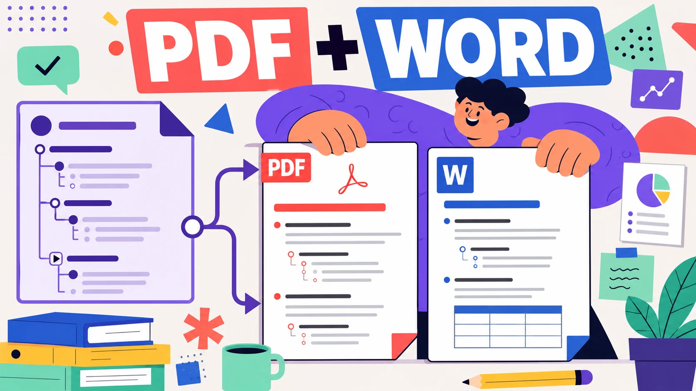

幕布可以通过 Mubu Exporter 批量导出 PDF 和 Word 文件。PDF 更适合归档、打印和发送给别人查看；Word 更适合后续编辑、复制内容或重新排版。如果你只是要迁移到 Obsidian、Notion、飞书，优先看幕布导出 Markdown 指南；如果目标是交付材料或纸质打印，PDF/Word 会更顺手。
这篇文章不讲概念，直接把操作路径、格式差异和常见失败原因讲清楚。下面的结论基于当前插件实现：Word 在本地转换为 Office 可打开的 .doc 文件，PDF 通过幕布转换接口生成，二者都会按原有文件夹层级保存到浏览器下载目录。
快速答案：批量导出 PDF/Word 的流程是：登录幕布网页版 → 打开插件 → 获取文件信息 → 选择 PDF 或 Word → 开始导出。Word 更适合可编辑备份，PDF 更适合定稿归档。遇到失败时，优先检查幕布登录状态、Chrome 下载设置和插件里的失败重试入口。

PDF 和 Word 分别适合什么场景？
很多人把 PDF 和 Word 都归为「办公格式」，但在幕布导出场景里，它们解决的是两类问题。
| 目标 | 推荐格式 | 原因 |
|---|---|---|
| 提交给老师、客户或同事审阅 | 版式稳定，别人打开后不容易乱 | |
| 打印会议纪要、课程笔记 | 分页和字体更可控 | |
| 继续改写大纲内容 | Word | 可以在 Word、WPS、Pages 中继续编辑 |
| 从幕布复制到报告模板 | Word | 更方便复制段落、表格和层级内容 |
| 长期机器可读备份 | Markdown / JSON | 更适合版本管理和二次处理 |
如果你只想「看起来像原来的幕布」，PDF 通常更省心。如果你后面还要改字、调格式、合并到报告里，Word 更合适。需要长期迁移时，建议额外导出一份 Markdown 或 JSON，避免把数据只锁在办公文档里。
如何批量导出幕布为PDF？
- 用桌面 Chrome 打开 mubu.com，确认账号已登录。
- 点击浏览器工具栏里的「幕布导出工具」。
- 点击「获取文件信息」，等待插件扫描文档和文件夹。
- 在导出格式里选择 PDF (.pdf)。
- 点击「开始导出」，等待进度条完成。
导出后，文件会保存在浏览器下载目录下的子文件夹中。默认子文件夹是 幕布备份，也可以在设置页改成例如 MubuBackup/2026-07 这种更好归档的路径。
如何批量导出幕布为Word？
Word 的步骤和 PDF 基本一样，只是在导出格式中选择 Word (.doc)。当前插件生成的是 .doc 文件，不是 .docx。大多数 Word/WPS/Pages 都能直接打开；如果你必须提交 .docx，打开后再「另存为 .docx」即可。
插件在生成 Word 时做了几件清理工作：去掉容易导致 Word 乱码的 emoji，清洗幕布表格里的编辑器按钮，把公式内容转成可读文本，并设置中文字体回退。这样做的目标不是百分百复刻幕布界面，而是让文档更容易打开、编辑和打印。
哪些格式能保留，哪些会变化？
| 幕布内容 | Word | 说明 | |
|---|---|---|---|
| 大纲层级 | 保留 | 保留 | 按节点缩进和标题级别展示 |
| 备注 | 保留 | 保留 | Word 中以左侧边框注释样式显示 |
| 表格 | 保留 | 重建为干净表格 | 复杂表格建议导出后检查一遍 |
| 图片 | 取决于幕布转换结果 | 以图片链接方式引用 | 彻底离线归档建议再导出 HTML/JSON 备份 |
| emoji | 通常保留 | 可能被移除 | 为了避免 Word 字符乱码 |
| 数学公式 | 取决于幕布转换结果 | 转为 LaTeX 文本 | 适合保留信息，不保证公式排版 |
一句话总结：PDF 更偏「视觉定稿」，Word 更偏「可编辑内容」。如果你的文档里有大量公式、图片或复杂表格，不要只导出一种格式，最好同时保留 HTML 或 JSON 版本。具体用法可以看幕布导出 HTML/JSON 归档指南。
导出失败怎么排查？
问题一：提示未检测到 Jwt-Token
这说明插件没有读取到幕布登录态。重新打开 幕布登录页 登录，再回到插件点击「获取文件信息」。不需要手动复制 token，也不要把账号密码输入到任何第三方页面。
问题二：每个文件都弹保存框
这是 Chrome 下载设置导致的。打开浏览器设置里的「下载内容」，关闭「下载前询问每个文件的保存位置」。否则批量导出 200 篇文档时，你会被迫点 200 次确认。
问题三：只有少量PDF失败
PDF 需要调用幕布的转换接口，偶发网络波动或接口短暂失败时，少量文档可能会失败。不要直接重置全部任务，先等一会儿，再点击插件里的「重试失败的文件」。插件会只处理失败项，不会重新导出已成功的文件。
问题四：Word 打开后样式和幕布不完全一样
这是正常现象。Word 导出的目标是内容可编辑和结构清晰，不是逐像素复刻幕布。对视觉还原要求高时，用 PDF；对内容再加工要求高时，用 Word；对迁移和长期备份要求高时，用 Markdown 或 JSON。
推荐的备份组合
如果你只导出一次，我建议不要只选 PDF/Word。更稳妥的组合是：
- PDF：给别人看、打印、留定稿。
- Word：继续编辑、整理成报告。
- Markdown：迁移到 Obsidian、Notion、飞书等工具。
- JSON：保留幕布原始结构，方便以后写脚本二次处理。
这套组合比单一 PDF 更抗风险。你既有可读版，也有可编辑版，还有机器可读的结构化备份。关于完整备份节奏，可以继续读每月备份一次幕布的策略。
常见问题
幕布导出PDF需要会员吗？
使用 Mubu Exporter 时，插件复用你在浏览器里的幕布登录状态来读取文档。能否成功导出取决于当前账号权限、接口状态和文档可访问性。建议先用少量文档测试，再做全量导出。
Word 文件为什么是 .doc 而不是 .docx？
当前插件生成的是 Office 兼容 HTML，并保存为 .doc，这样可以在浏览器扩展的本地环境里稳定生成。需要 .docx 时，用 Word 或 WPS 打开后另存为即可。
PDF 和 Word 哪个更适合长期备份？
长期备份不建议只保留 PDF 或 Word。PDF 适合阅读归档，Word 适合编辑，Markdown/JSON 更适合长期迁移和二次处理。至少保留一种办公格式和一种结构化格式。
相关链接：